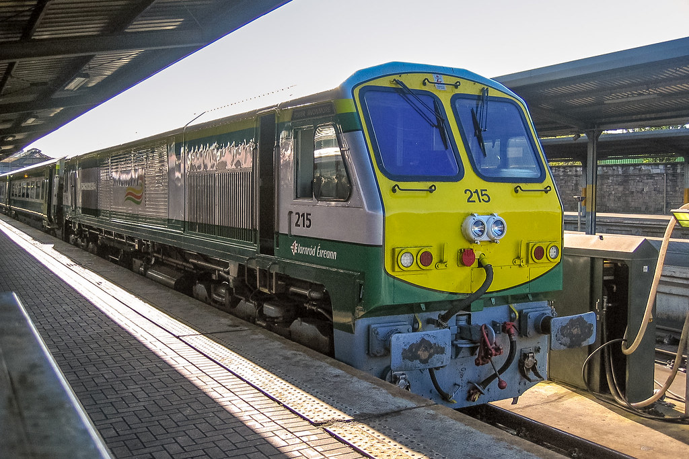

The 22000 Class "InterCity Railcar" is a diesel multiple unit in service with Iarnród Éireann in Ireland.They are the first IÉ DMUs built specifically for InterCity routes, although they can also work on some Commuter routes. They are designed to operate at a maximum speed of 160 km/h (100 mph).In 2005, the Irish Government announced the €34 billion Transport 21 proposal for significant improvements to transport infrastructure, with major emphasis on the railway network. As part of this, large-scale replacement of rolling stock was planned, then made up entirely of locomotive-hauled coaching stock, the most based on the British Rail Mark 2 and Mark 3. IÉ ordered 120 replacement vehicles: in a major departure, the new trains would be 3 and 6 car DMUs rather than locomotive-hauled carriages. This order was extended to 150 vehicles in 2005, to 183 vehicles in 2007 and to 234 vehicles in December 2008. In 2017 it was proposed to order additional middle cars to extend sets, with this taking place by 2023. No new driving cars would be ordered but as many services operate with two units joined currently it would be possible to reconfigure and release more units.
Each set comprises two driving end cars (DM1 and DM2) and two intermediate cars (MDT and MT) They are capable of operation as two sets of their own class or in formations of up to 10 cars with either 2600 Class or 2800 Class DMUs. Each car is fitted with a 294 kW MAN traction engine and a Cummins generator engine, both mounted underfloor. Each 4-car set is 81.46 m (267 ft 3 in) long, 3.985 m (13 ft 0.9 in) high and 2.9 m (9 ft 6 in) wide. They have a maximum permitted speed of 120 km/h (75 mph). Passenger capacity is 185 seated and 634 standing.The original delivery of twenty sets were numbered 2901-2980. However, to avoid conflict with the existing numbering system of the NIR 3000 Class, all cars were renumbered e.g. set 2901-04 becoming 29101-401. The 2005 batch of nine sets are numbered 29021-29029.The railcars were the first to be shipped with the new Commuter branding rather than the "Arrow" branding previously used, and as such were the first Iarnród Éireann rolling stock (other than DART EMUs and Enterprise stock) not to feature the company's traditional orange and black livery, which was phased out from passenger service in 2006. The Commuter brand was also extended to Classes 2600, 2700 and 2800 railcars. It has since been replaced by the InterCity livery on these DMUs.
In 2014, a new all-over two-tone green livery was introduced for the class. This has not yet been applied to all vehicles.

By the early 1990s the locomotives operating passenger services in Ireland were becoming increasingly obsolete, with the newest type in service being the 071 Class introduced in 1976. The economic boom in Ireland in the mid-1990s allowed Iarnród Éireann to begin significant investment in the infrastructure of the railways, which began with an order for 32 brand new express locomotives from GM-EMD. Northern Ireland Railways also purchased 2. The first were delivered in 1994, with deliveries continuing until 1995.To allow clearance tests and driver training to commence in advance of the delivery of the main order of 201s, it was decided to transport the first locomotive, number 201, to Dublin by air. An Antonov An-124 was used to transport the locomotive from London, Ontario to Dublin Airport, arriving on Thursday 9 June 1994. The first light-engine test run operated from Inchicore works to Kildare on the Tuesday 14. Unfortunately, the locomotives have had a chequered service history. The authors of Jane's Train Recognition Guide noted that IÉ had had problems with engine fires and bogie cracks.
The Dublin Area Rapid Transit system (stylized as DART) is an electrified commuter rail railway network serving the coastline and city centre of Dublin. The service makes up the core of Dublin's suburban railway network, stretching from Greystones, County Wicklow, in the south to Howth and Malahide in north County Dublin. The DART serves 31 stations and consists of 53 kilometres of track, and carries in the region of 20 million passengers per year. The DART system was established by Córas Iompair Éireann in 1984 to replace an ageing fleet of diesel-powered locomotives. Since 1987 the service is operated by Iarnród Éireann, Ireland's national rail operator.Contemporary rolling stock on the DART network is powered by 1500 V DC overhead lines and uses the Irish 1,600 mm gauge. A 40 km extension to the network as the first phase of a 100 km extension programme is currently under detailed design. Additional developments, including the construction of a DART Underground, were proposed, but postponed following the post-2008 Irish economic downturn.